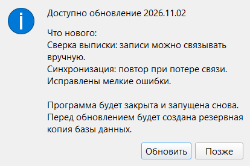
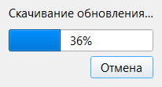

Раздел 15. Обновление программы |
Программа сама проверяет, не вышла ли новая версия, и ставит её, когда вы согласитесь. Данные при обновлении не меняются.
Как программа узнаёт о новой версии |
Проверка идёт при каждом запуске и по кнопке «Проверить сейчас» в «Настройки» → «Информация» (раздел 12). Нужен интернет. Если связи нет, программа сама повторит запрос три раза.
Результат виден в строке состояния (раздел 2) и в «Настройки» → «Информация» (время и итог последней проверки):
| В строке состояния | В настройках | Что значит |
|---|---|---|
| «Обновления: актуальная версия» | «Установлена актуальная версия» | Новой версии нет |
| «Обновления: доступна 2026.11.02» | «Доступно обновление 2026.11.02» | Есть новая версия |
| «Обновления: ошибка» | «Не удалось проверить обновления (подробности в логе)» | Проверка не удалась, см. «Что может пойти не так» |
| «Обновления: отключены» | «Проверка обновлений отключена» | Проверка отключена в вашей версии программы |
Установка обновления |

Рис. 55. Предложение обновиться.
В «Что нового» — текст, который автор версии написал для пользователей; если его нет, написано «Описание не указано.» «Позже» ничего не меняет: предложение вернётся при следующем запуске или после ручной проверки. Если на экране открыто другое окно, предложение появится, когда вы его закроете.
Программа сохраняет копию базы backup_… в папку резервных копий (раздел 13). Если копию создать не удалось, она спросит: «Не удалось создать резервную копию базы данных. Продолжить обновление без неё?» Лучше ответить «Нет» и сначала исправить папку копий.
Программа скачивает обновление и проверяет его. Остановить можно кнопкой «Отмена», пока идёт скачивание; на «Проверка и распаковка файлов…» отмены нет.

Рис. 56. Скачивание обновления.
|
🍎 macOS: Обновление работает, только если программа лежит в папке «Программы» (или в другой папке с правом записи). Иначе оно не начнётся и программа объяснит почему (приложение 2). |
Что происходит с данными |
data остаются как были.before_migration_v….db (раздел 13).Что может пойти не так |
| Что вы видите | Что случилось | Что делать |
|---|---|---|
| «Не удалось проверить обновления (подробности в логе)» | Нет связи с Яндекс.Диском или файл версии повреждён | Проверьте интернет и нажмите «Проверить сейчас». Если повторяется, обратитесь к ответственному за программу, и приложите журнал работы |
| «Доступна версия …, но она несовместима с текущей базой данных» | В выложенной версии база старее вашей, обновляться на неё нельзя | Не обновляйтесь, сообщите ответственному за программу |
| «Не удалось связаться с Яндекс.Диском. Проверьте подключение к интернету.» или «Не удалось скачать обновление. Проверьте подключение к интернету.» | Скачать файл не получилось, даже после трёх попыток | Повторите, когда связь наладится |
| «Скачанный файл повреждён (не совпала контрольная сумма). Попробуйте ещё раз.» | Файл скачался с ошибкой | Повторите обновление |
| «Архив с обновлением повреждён.», «В архиве обновления нет …», «В архиве обновления есть папка data, установка отменена.» | Ошибка в самой выложенной версии. Ничего не изменено | Сообщите ответственному за программу |
| «Не удалось записать файлы в папку программы. Возможно, флешка защищена от записи или закончилось место.», «Не удалось записать файл обновления в папку программы.», «Не удалось распаковать обновление. Возможно, на диске не хватает места.» | В папке программы нет места или права на запись | Освободите место, проверьте права на запись в папку программы |
| «Не удалось запустить установку обновления.» | Программа не смогла запустить установщик. Ничего не изменено | Повторите обновление. Если повторяется, сообщите ответственному за программу, и приложите журнал работы |
«Не удалось подготовить обновление. Запущена прежняя версия.» или «Не удалось установить обновление. Запущена прежняя версия.» (подробности в data\logs\updater.log) |
Установщик не смог заменить файлы и вернул всё назад | Повторите обновление позже. Если повторяется, сообщите ответственному за программу, и приложите updater.log |
Если после неудачной установки программа не запускается, обратитесь к ответственному за программу. Ваши данные в папке data остаются на месте.